Penalties & Stewards
Every stewards' decision, infringement, fine and penalty from the FIA event documents.
FIA official stewards' decisions and summons
Official source; curated transcription may await review. Linked PDFs are the authority. Discovery does not extract or verify numeric values, and does not replace the curated material below.
Last successful FIA document discovery: 2026-11-08T23:37:56.383862+00:00. This is retrieval time, not issue time; newer revisions may exist.
- 2026_mexico_city_grand_prix_-_infringement_-_car_43_-_failing_to_slow_under_yellow_flags.pdf (official PDF)
- 2026_mexico_city_grand_prix_-_infringement_-_car_10_-_failing_to_slow_under_yellow_flags.pdf (official PDF)
- 2026_mexico_city_grand_prix_-_infringement_-_car_63_-_failure_to_attend_mandatory_post-race_commitments.pdf (official PDF)
- 2026_mexico_city_grand_prix_-_summons_-_car_63_-_alleged_failure_to_attend_mandatory_post-race_commitments.pdf (official PDF)
- 2026_mexico_city_grand_prix_-_infringement_-_race_deleted_lap_times.pdf (official PDF)
- 2026_mexico_city_grand_prix_-_infringement_-_car_81_-_causing_a_collision.pdf (official PDF)
- 2026_mexico_city_grand_prix_-_summons_-_car_43_-_alleged_failure_to_slow_for_yellow_flags.pdf (official PDF)
- 2026_mexico_city_grand_prix_-_summons_-_car_10_-_alleged_failure_to_slow_for_yellow_flags.pdf (official PDF)
- 2026_mexico_city_grand_prix_-_decision_-_car_10_-_alleged_leaving_the_track_and_gaining_an_advantage.pdf (official PDF)
- 2026_mexico_city_grand_prix_-_infringement_-_car_27_-_causing_a_collision.pdf (official PDF)
- 2026_mexico_city_grand_prix_-_summons_-_car_41_-_t2_incident_with_car_81.pdf (official PDF)
- 2026_mexico_city_grand_prix_-_summons_-_car_81_-_t2_incident_with_car_41.pdf (official PDF)
- 2026_mexico_city_grand_prix_-_infringement_-_car_11_-_pit_lane_speeding.pdf (official PDF)
- 2026_mexico_city_grand_prix_-_infringement_-_car_63_-_causing_a_collision.pdf (official PDF)
- 2026_mexico_city_grand_prix_-_infringement_-_car_16_-_left_the_track_and_gained_a_lasting_advantage.pdf (official PDF)
- 2026_mexico_city_grand_prix_-_infringement_-_car_55_-_pit_lane_speeding.pdf (official PDF)
- 2026_mexico_city_grand_prix_-_infringement_-_car_30_-_changes_made_during_parc_ferme.pdf (official PDF)
- 2026_mexico_city_grand_prix_-_decision_-_car_30_-_permission_to_start.pdf (official PDF)
- 2026_mexico_city_grand_prix_-_infringement_-_car_30_-_technical_nonconformity.pdf (official PDF)
- 2026_mexico_city_grand_prix_-_summons_-_car_30_-_alleged_mgu-k_infringement.pdf (official PDF)
- 2026_mexico_city_grand_prix_-_mgu-k_infringement_car_30.pdf (official PDF)
- 2026_mexico_city_grand_prix_-_infringement_-_car_6_-_crossing_the_white_line_at_pit_entry.pdf (official PDF)
- 2026_mexico_city_grand_prix_-_infringement_-_car_55_-_failed_to_follow_race_directors_instructions_-_turn_11.pdf (official PDF)
- 2026_mexico_city_grand_prix_-_decision_-_qualifying_sc2-sc1_times.pdf (official PDF)
- 2026_mexico_city_grand_prix_-_infringement_-_qualifying_deleted_lap_times_-_double_yellow.pdf (official PDF)
- 2026_mexico_city_grand_prix_-_infringement_-_qualifying_deleted_lap_times.pdf (official PDF)
- 2026_mexico_city_grand_prix_-_infringement_-_car_14_-_failed_to_replace_the_steering_wheel_after_leaving_the_car.pdf (official PDF)
- 2026_mexico_city_grand_prix_-_infringement_-_free_practice_3_deleted_lap_times.pdf (official PDF)
- 2026_mexico_city_grand_prix_-_infringment_-_car_77_-_pit_lane_speeding.pdf (official PDF)
- 2026_mexico_city_grand_prix_-_infringement_-_car_6_-_misconduct.pdf (official PDF)
- 2026_mexico_city_grand_prix_-_decision_-_driver_change_tgr_haas_f1_team.pdf (official PDF)
- 2026_mexico_city_grand_prix_-_summons_-_car_6_-_alleged_misconduct.pdf (official PDF)
- 2026_mexico_city_grand_prix_-_infringement_-_car_30_-_turn_14_incident_with_car_3_.pdf (official PDF)
- 2026_mexico_city_grand_prix_-_infringement_-_car_3_-_turn_14_incident_with_car_30_.pdf (official PDF)
- 2026_mexico_city_grand_prix_-_infringement_-_car_5_-_covering_components.pdf (official PDF)
- 2026_mexico_city_grand_prix_-_summons_-_audi_-_car_5_covering_of_components.pdf (official PDF)
- 2026_mexico_city_grand_prix_-_infringement_-_free_practice_2_deleted_lap_times.pdf (official PDF)
- 2026_mexico_city_grand_prix_-_infringment_-_car_14_-_pit_lane_speeding_0.pdf (official PDF)
- 2026_mexico_city_grand_prix_-_summons_-_car_30_-_turn_14_incident_with_car_3.pdf (official PDF)
- 2026_mexico_city_grand_prix_-_summons_-_car_3_-_turn_14_incident_with_car_30.pdf (official PDF)
- 2026_mexico_city_grand_prix_-_infringement_-_car_98_-_released_in_an_unsafe_condition.pdf (official PDF)
- 2026_mexico_city_grand_prix_-_infringement_-_free_practice_1_deleted_lap_times_-_double_yellow.pdf (official PDF)
- 2026_mexico_city_grand_prix_-_infringement_-_free_practice_1_deleted_lap_times.pdf (official PDF)
- 2026_mexico_city_grand_prix_-_infringment_-_car_14_-_pit_lane_speeding.pdf (official PDF)
- 2026_mexico_city_grand_prix_-_infringement_-_car_77_-_pu_elements.pdf (official PDF)
- 2026_mexico_city_grand_prix_-_summons_-_audi_-_alleged_release_of_car_98_in_an_unsafe_condition.pdf (official PDF)
Summons request a hearing; they are not findings or penalties.
| Doc | Driver | Session | Matter | Ruling |
|---|---|---|---|---|
| Doc 17 | Valtteri Bottas #77 Cadillac Formula 1 Team | Free Practice 1 | The following Power Unit elements have been used: | Penalty Drop of 50 grid positions for the next Race in which the driver participates.View FIA decision — 1 pageOriginal FIA PDF. Retrieved 2026-11-08T21:05:45+00:00 (not the issue date). Latest screenshot refresh failed; these are the last successful images. Check the original PDF for later revisions. 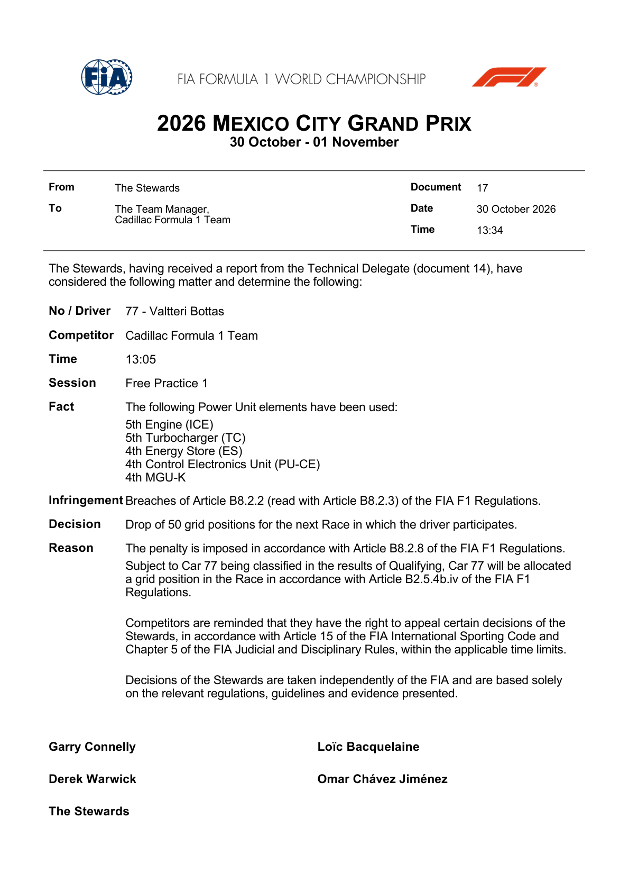 |
| Doc 18 | Fernando Alonso #14 Aston Martin Aramco F1 Team | Free Practice 1 | Pit lane speeding – 80.2 km/h | Fine The competitor (Aston Martin Aramco F1 Team) is fined €100.View FIA decision — 1 pageOriginal FIA PDF. Retrieved 2026-11-08T21:05:45+00:00 (not the issue date). Latest screenshot refresh failed; these are the last successful images. Check the original PDF for later revisions. 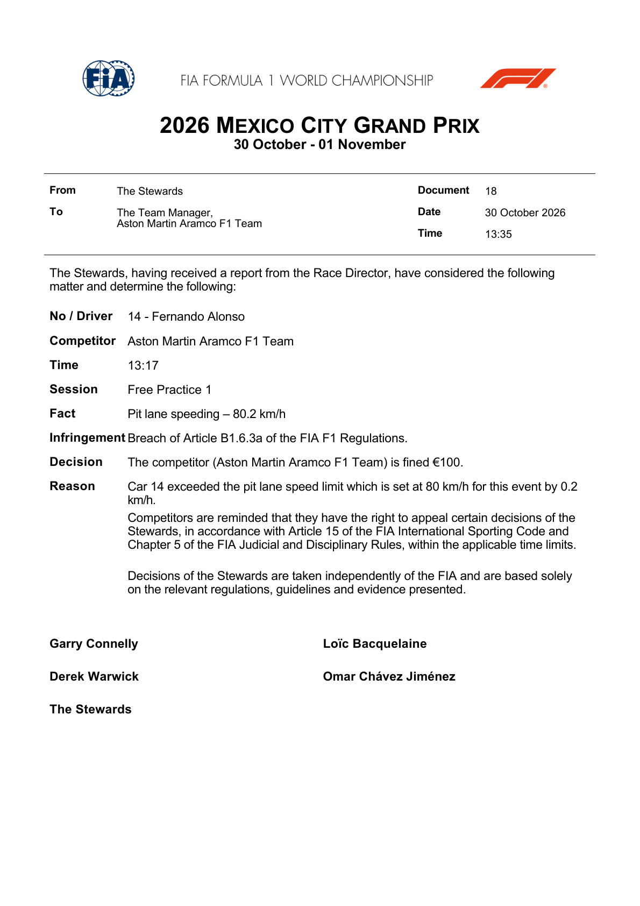 |
| Doc 20 | Nico Hulkenberg; Oliver Bearman; Kimi Antonelli; Nikola Tsolov; Colton Herta; Isack Hadjar; Arvid Lindblad; Leonardo Fornaroli; Oscar Piastri; Carlos Sainz; Jak Crawford; Ryo Hirakawa; Freddie Slater; Gabriele Mini; Luke Browning | Free Practice 1 | The F1 Cars below did not use the track at turns 1, 2, 4, 6, 11, 12 and 14. | Note Deletion of the lap times shown in accordance with Article 12.4.1.e of the FIA InternationalView FIA decision — 2 pagesOriginal FIA PDF. Retrieved 2026-11-08T21:05:45+00:00 (not the issue date). Latest screenshot refresh failed; these are the last successful images. Check the original PDF for later revisions. 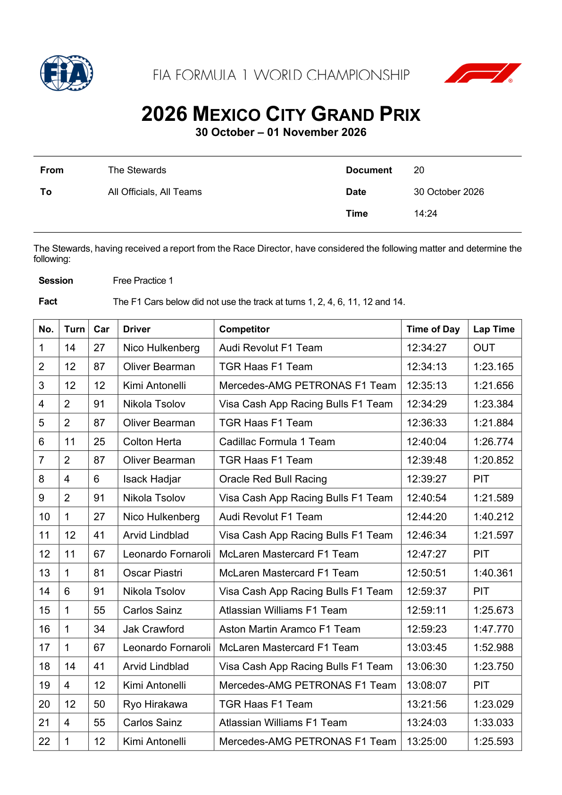 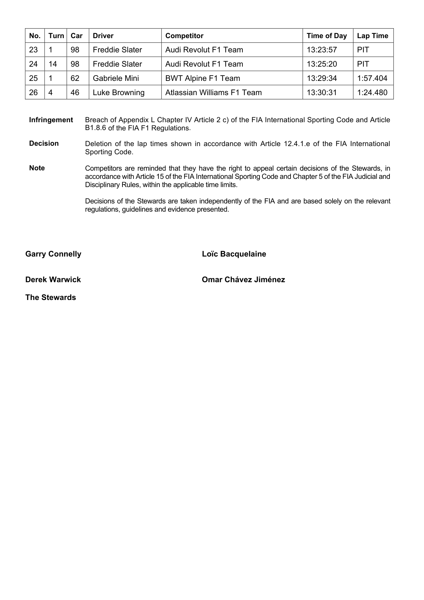 |
| Doc 21 | Gabriele Mini; Oliver Bearman; Ryo Hirakawa; Lewis Hamilton | Free Practice 1 | The F1 Cars passed through a double waved yellow flag marshalling sector. | Note Deletion of the lap times shown in accordance with Article 12.4.1.e of the FIA InternationalView FIA decision — 1 pageOriginal FIA PDF. Retrieved 2026-11-08T21:05:45+00:00 (not the issue date). Latest screenshot refresh failed; these are the last successful images. Check the original PDF for later revisions. 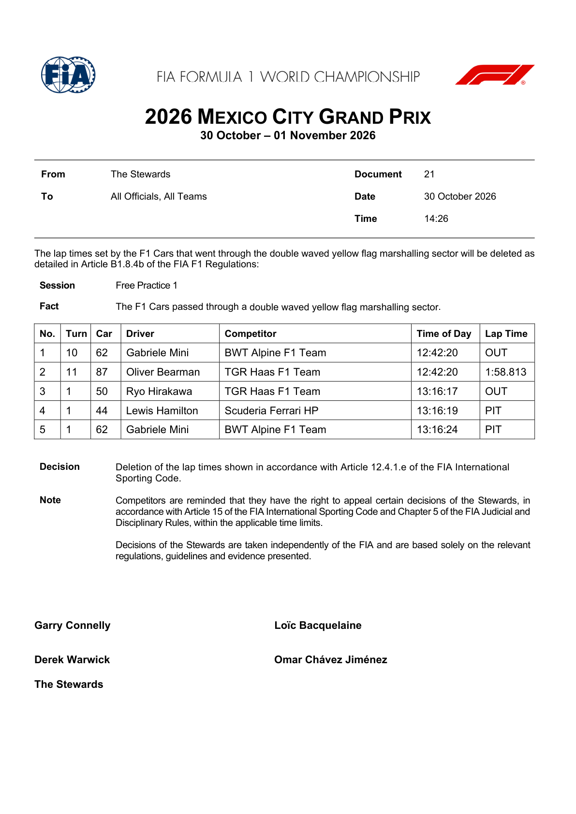 |
| Doc 22 | Freddie Slater #98 Audi Revolut F1 Team | Free Practice 1 | Car 98 was released with a cooling fan still attached to the intake of the right radiator. | Fine The competitor (Audi Revolut F1 Team) is fined €7,500.View FIA decision — 1 pageOriginal FIA PDF. Retrieved 2026-11-08T21:05:45+00:00 (not the issue date). Latest screenshot refresh failed; these are the last successful images. Check the original PDF for later revisions. 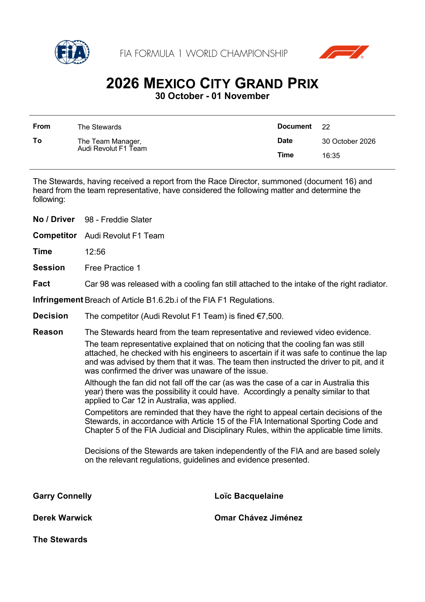 |
| Doc 25 | Fernando Alonso #14 Aston Martin Aramco F1 Team | Free Practice 2 | Pit lane speeding – 80.1 km/h | Fine The competitor (Aston Martin Aramco F1 Team) is fined €100.View FIA decision — 1 pageOriginal FIA PDF. Retrieved 2026-11-08T21:05:45+00:00 (not the issue date). Latest screenshot refresh failed; these are the last successful images. Check the original PDF for later revisions. 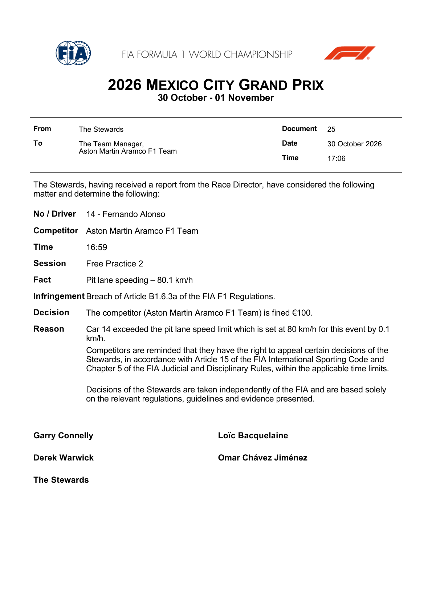 |
| Doc 27 | Oliver Bearman; Valtteri Bottas; Pierre Gasly; Oscar Piastri; Lando Norris; Isack Hadjar; Max Verstappen; Charles Leclerc; Franco Colapinto; Carlos Sainz; Nico Hulkenberg; Alexander Albon | Free Practice 2 | The F1 Cars below did not use the track at turns 1, 3, 4, 5, 12 and 14. | Note Deletion of the lap times shown in accordance with Article 12.4.1.e of the FIA InternationalView FIA decision — 2 pagesOriginal FIA PDF. Retrieved 2026-11-08T21:05:45+00:00 (not the issue date). Latest screenshot refresh failed; these are the last successful images. Check the original PDF for later revisions. 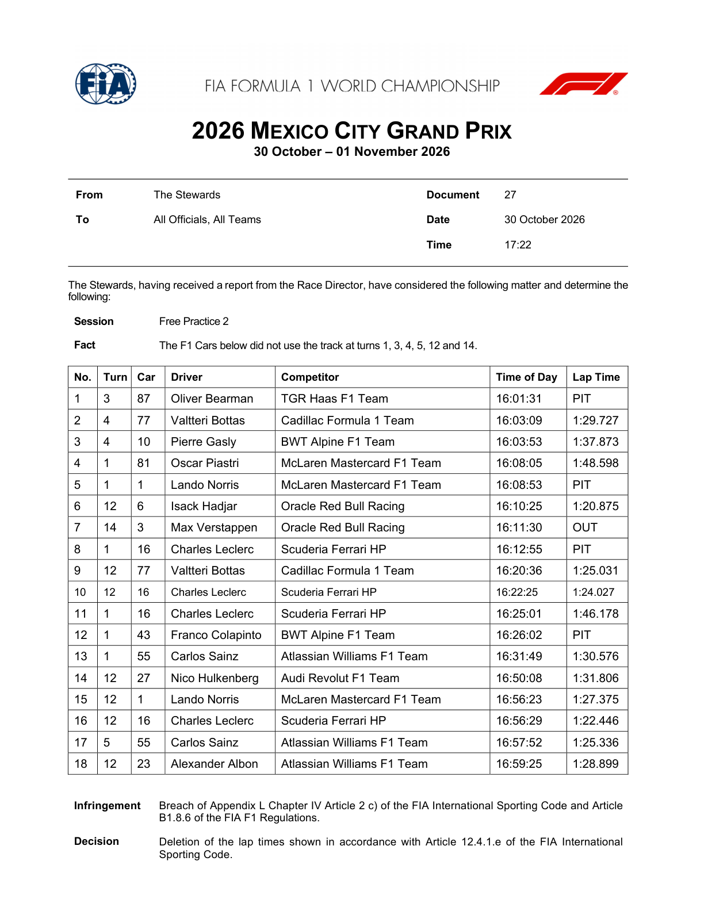 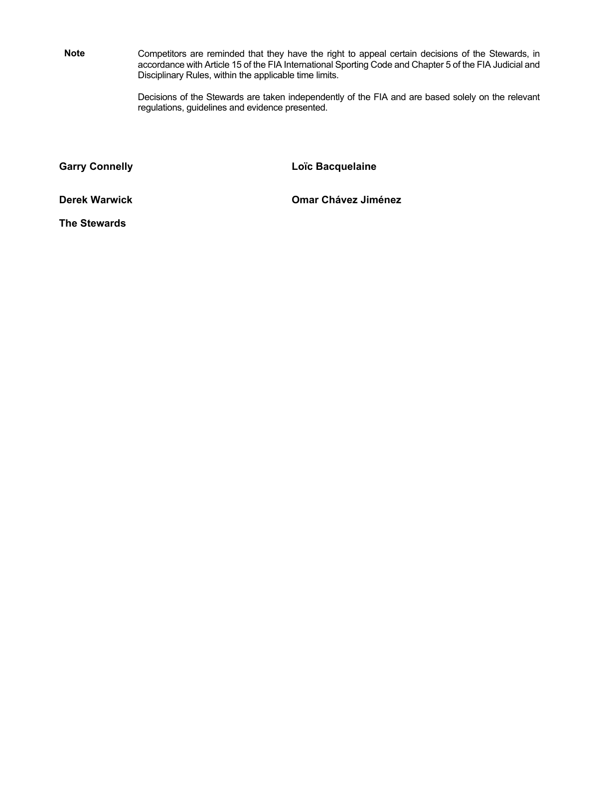 |
| Doc 32 | Gabriel Bortoleto #5 Audi Revolut F1 Team | Free Practice 2 | The floor of Car 5 was transported by team personnel from one side of the garage to | Fine The competitor (Audi Revolut F1 Team) is fined €5,000.View FIA decision — 2 pagesOriginal FIA PDF. Retrieved 2026-11-08T21:05:45+00:00 (not the issue date). Latest screenshot refresh failed; these are the last successful images. Check the original PDF for later revisions. 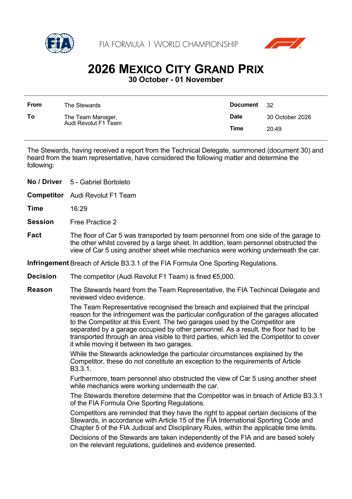 |
| Doc 33 | Max Verstappen #3 Oracle Red Bull Racing | Free Practice 2 | Cars 3 and 30 engaged in a series of moves on the entry to turn 12 through to the | Penalty A drop of one grid position for the next race in which the driver competes.View FIA decision — 2 pagesOriginal FIA PDF. Retrieved 2026-11-08T21:05:45+00:00 (not the issue date). Latest screenshot refresh failed; these are the last successful images. Check the original PDF for later revisions. 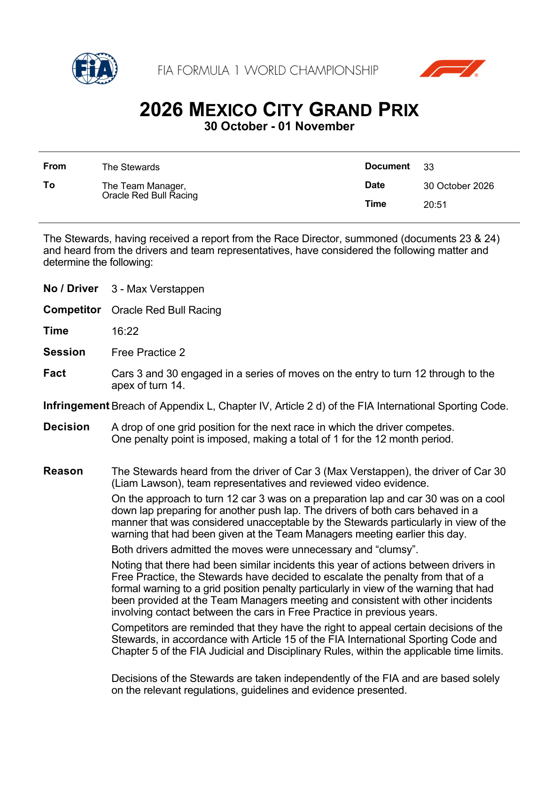 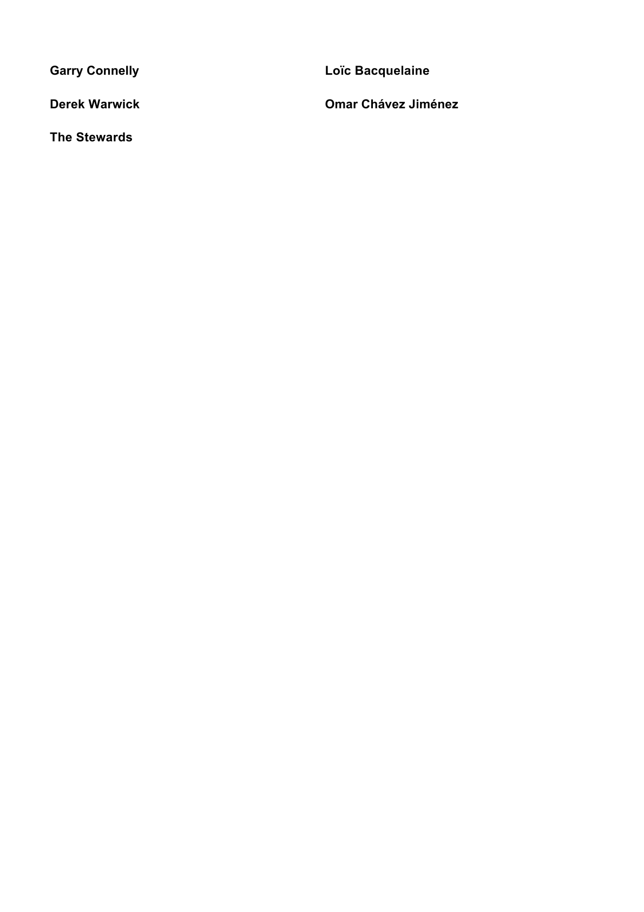 |
| Doc 34 | Liam Lawson #30 Visa Cash App Racing Bulls F1 Team | Free Practice 2 | Cars 3 and 30 engaged in a series of moves on the entry to turn 12 through to the | Penalty A drop of one grid position for the next race in which the driver competes.View FIA decision — 2 pagesOriginal FIA PDF. Retrieved 2026-11-08T21:05:45+00:00 (not the issue date). Latest screenshot refresh failed; these are the last successful images. Check the original PDF for later revisions. 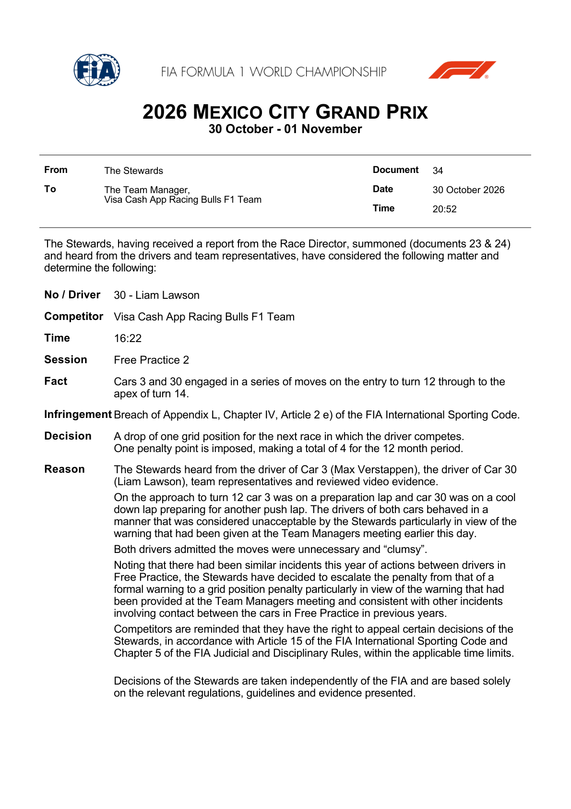 |
| Doc 36 | Ryo Hirakawa #50 TGR Haas F1 Team | Driver change | Note Permission granted for Ryo Hirakawa (car 50) to participate in place of Esteban Ocon (car 31) for the rest of the competition, subject to passing scrutineering.View FIA decision — 1 pageOriginal FIA PDF. Retrieved 2026-11-08T21:05:45+00:00 (not the issue date). Latest screenshot refresh failed; these are the last successful images. Check the original PDF for later revisions. 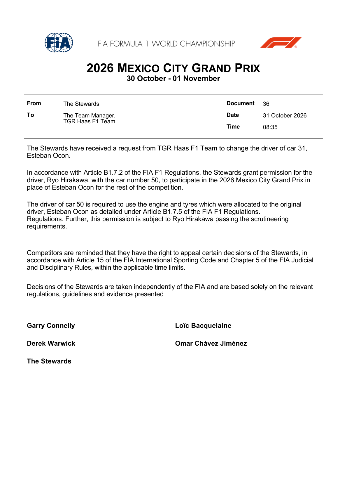 | |
| Doc 41 | Isack Hadjar #6 Oracle Red Bull Racing | Free Practice 1 | The driver and a Paddock guest appeared to have an interaction in the Paddock prior | Warning Driver: Formal warning.View FIA decision — 2 pagesOriginal FIA PDF. Retrieved 2026-11-08T21:05:45+00:00 (not the issue date). Latest screenshot refresh failed; these are the last successful images. Check the original PDF for later revisions. 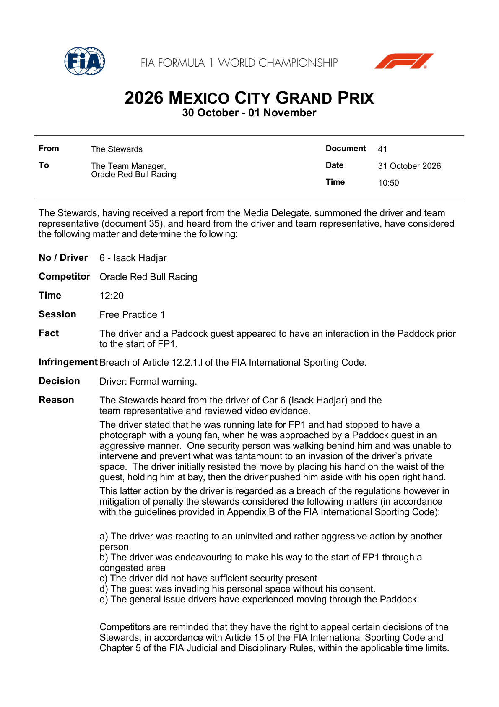 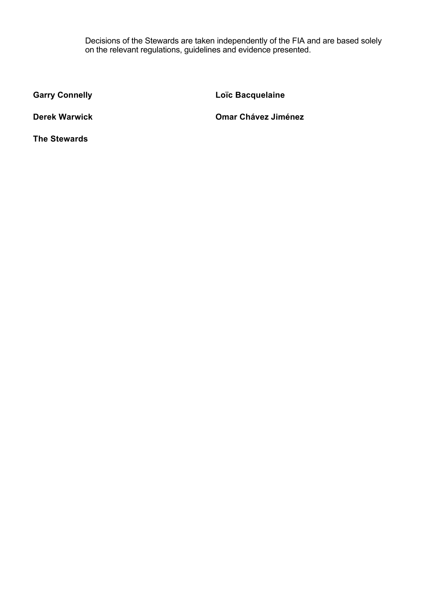 |
| Doc 42 | Valtteri Bottas #77 Cadillac Formula 1 Team | Free Practice 3 | Pit lane speeding – 80.9 km/h | Fine The competitor (Cadillac Formula 1 Team) is fined €100.View FIA decision — 1 pageOriginal FIA PDF. Retrieved 2026-11-08T21:05:45+00:00 (not the issue date). Latest screenshot refresh failed; these are the last successful images. Check the original PDF for later revisions. 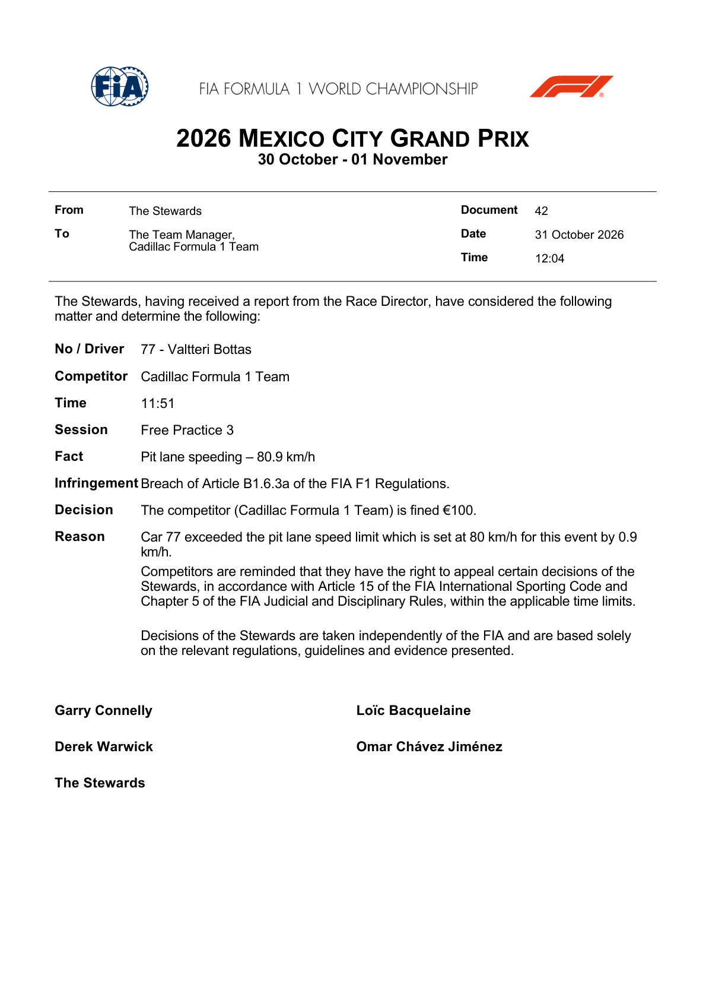 |
| Doc 44 | Pierre Gasly; Fernando Alonso; Oliver Bearman; Lewis Hamilton; Lando Norris; Nico Hulkenberg; Franco Colapinto; Carlos Sainz; Alexander Albon; Max Verstappen; George Russell | Free Practice 3 | The F1 Cars below did not use the track at turns 1, 4, 5, 8, 9, 11 and 12. | Note Deletion of the lap times shown in accordance with Article 12.4.1.e of the FIA InternationalView FIA decision — 2 pagesOriginal FIA PDF. Retrieved 2026-11-08T21:05:45+00:00 (not the issue date). Latest screenshot refresh failed; these are the last successful images. Check the original PDF for later revisions. 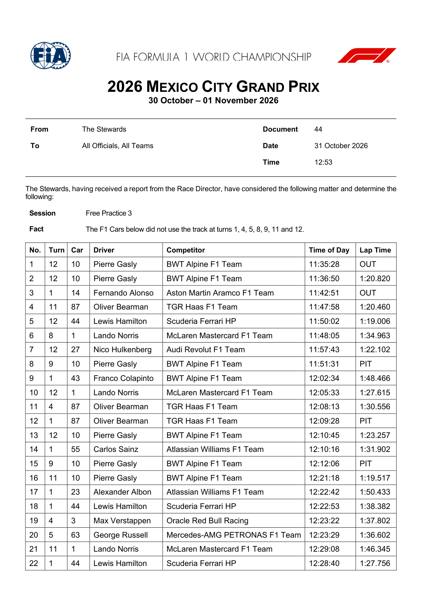 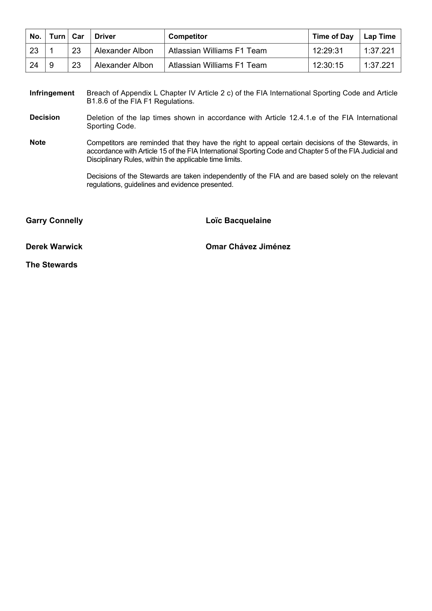 |
| Doc 45 | Fernando Alonso #14 Aston Martin Aramco F1 Team | Qualifying | The driver failed to replace the steering wheel after leaving the car. | Reprimand Driver: Reprimand (Driving).View FIA decision — 1 pageOriginal FIA PDF. Retrieved 2026-11-08T21:05:45+00:00 (not the issue date). Latest screenshot refresh failed; these are the last successful images. Check the original PDF for later revisions. 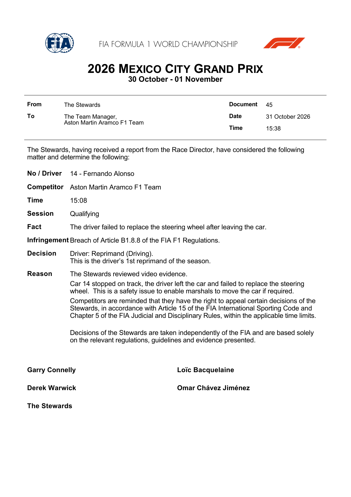 |
| Doc 48 | Lance Stroll; Isack Hadjar; Sergio Perez; Pierre Gasly; Lewis Hamilton; Carlos Sainz; Oliver Bearman | Qualifying | The F1 Cars below did not use the track at turns 1, 4, 9, 11, 12, 13 and 14. | Note Deletion of the lap times shown in accordance with Article 12.4.1.e of the FIA InternationalView FIA decision — 1 pageOriginal FIA PDF. Retrieved 2026-11-08T21:05:45+00:00 (not the issue date). Latest screenshot refresh failed; these are the last successful images. Check the original PDF for later revisions. 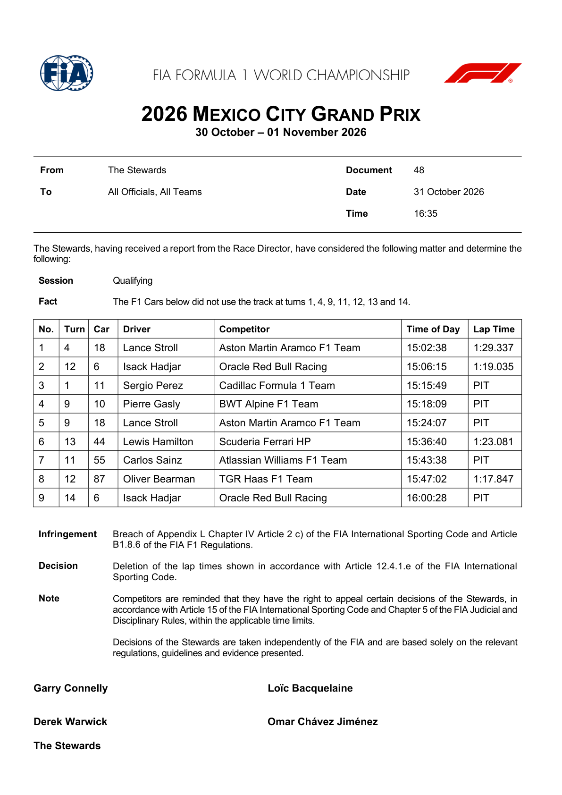 |
| Doc 49 | Pierre Gasly; Charles Leclerc; Carlos Sainz | Qualifying | The F1 Cars passed through a double waved yellow flag marshalling sector. | Note Deletion of the lap times shown in accordance with Article 12.4.1.e of the FIA InternationalView FIA decision — 1 pageOriginal FIA PDF. Retrieved 2026-11-08T21:05:45+00:00 (not the issue date). Latest screenshot refresh failed; these are the last successful images. Check the original PDF for later revisions. 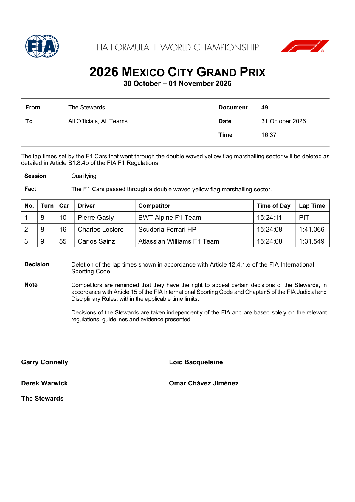 |
| Doc 50 | Gabriel Bortoleto; Valtteri Bottas; Lewis Hamilton; Sergio Perez; Isack Hadjar | Qualifying | The F1 Cars below exceeded the 1:38.0 time limit between the Safety Car lines. | No action No further action.View FIA decision — 2 pagesOriginal FIA PDF. Retrieved 2026-11-08T21:05:45+00:00 (not the issue date). Latest screenshot refresh failed; these are the last successful images. Check the original PDF for later revisions. 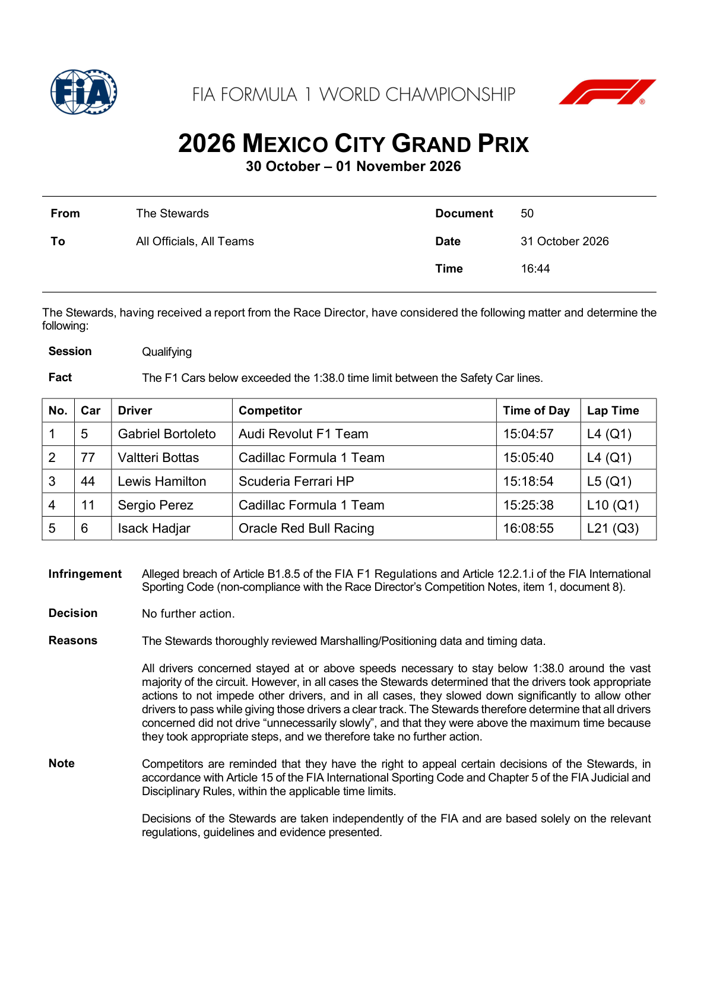 |
| Doc 51 | Carlos Sainz #55 Atlassian Williams F1 Team | Qualifying | The drive failed to follow Race Directors instructions after running off at Turn 11. | Warning Driver: Warning.View FIA decision — 1 pageOriginal FIA PDF. Retrieved 2026-11-08T21:05:45+00:00 (not the issue date). Latest screenshot refresh failed; these are the last successful images. Check the original PDF for later revisions. 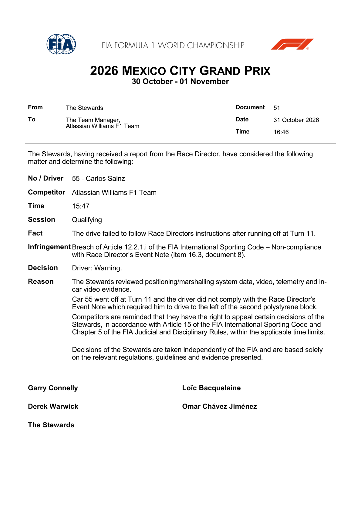 |
| Doc 52 | Isack Hadjar #6 Oracle Red Bull Racing | Qualifying | The driver failed to follow Race Directors instruction for entry to the pit lane. | Reprimand Driver: Reprimand (Driving).View FIA decision — 1 pageOriginal FIA PDF. Retrieved 2026-11-08T21:05:45+00:00 (not the issue date). Latest screenshot refresh failed; these are the last successful images. Check the original PDF for later revisions. 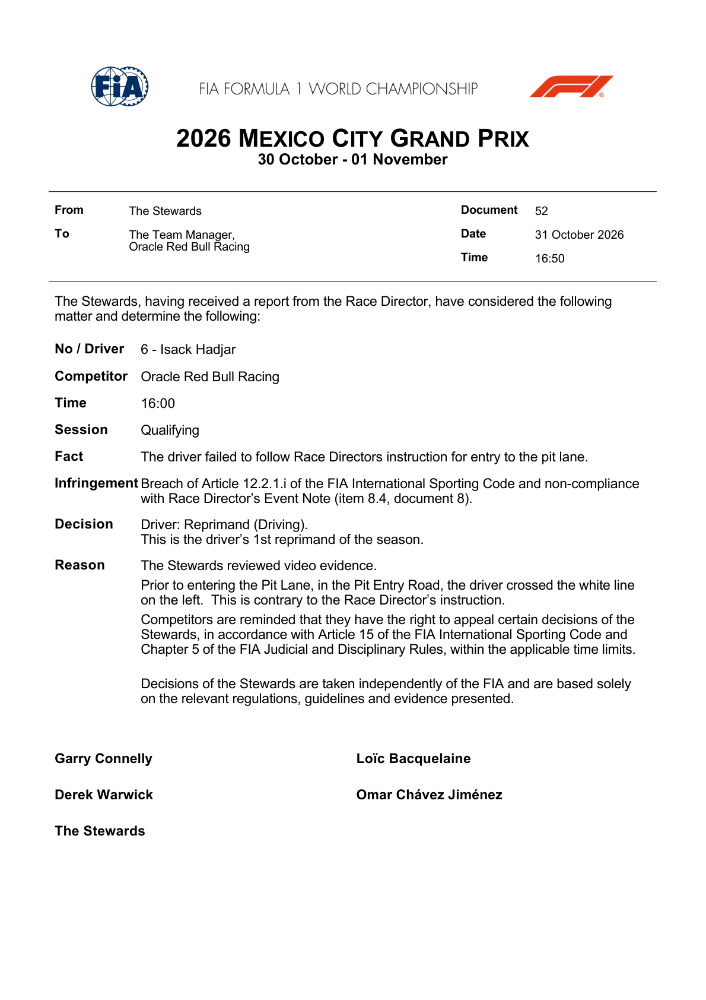 |
| Doc 57 | Liam Lawson #30 Visa Cash App Racing Bulls F1 Team | Qualifying | Car 30 did not comply with with the requirements of Articles C5.12.6 and C5.12.7 of | Note Car 30 is disqualified from the results of the Provisional Qualifying Classifications.View FIA decision — 2 pagesOriginal FIA PDF. Retrieved 2026-11-08T21:05:45+00:00 (not the issue date). Latest screenshot refresh failed; these are the last successful images. Check the original PDF for later revisions. 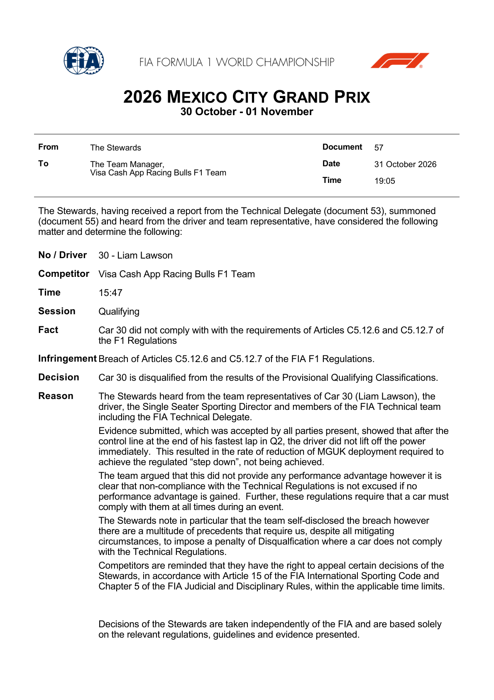 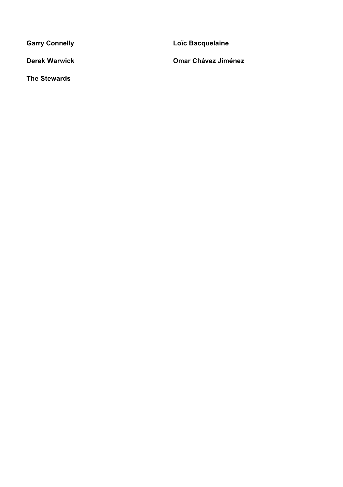 |
| Doc 58 | Liam Lawson #30 Visa Cash App Racing Bulls F1 Team | Race | Permission to start | Note Eligible to start the Race: 1. 30 - Liam Lawson – Visa Cash App Racing Bulls F1 TeamView FIA decision — 1 pageOriginal FIA PDF. Retrieved 2026-11-08T21:05:45+00:00 (not the issue date). Latest screenshot refresh failed; these are the last successful images. Check the original PDF for later revisions. 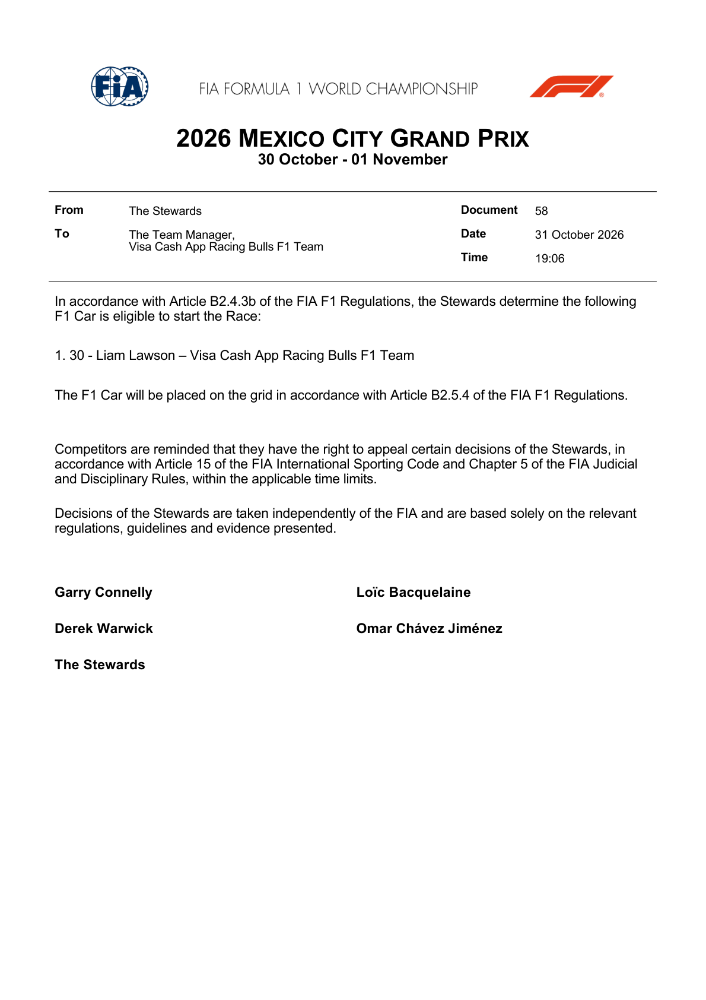 |
| Doc 65 | Liam Lawson #30 Visa Cash App Racing Bulls F1 Team | Qualifying | The setup of the suspension has been changed while under parc fermé. | Note Required to start the Race from the pit lane.View FIA decision — 2 pagesOriginal FIA PDF. Retrieved 2026-11-08T21:05:45+00:00 (not the issue date). Latest screenshot refresh failed; these are the last successful images. Check the original PDF for later revisions. 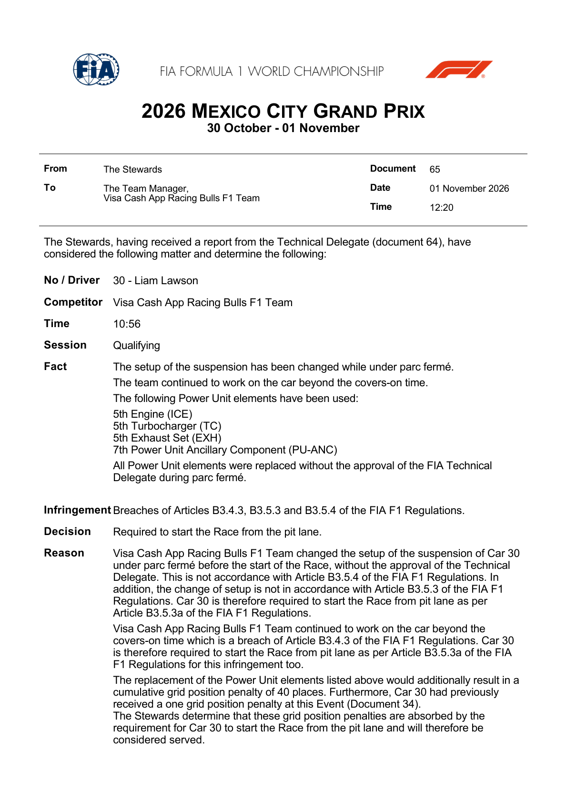 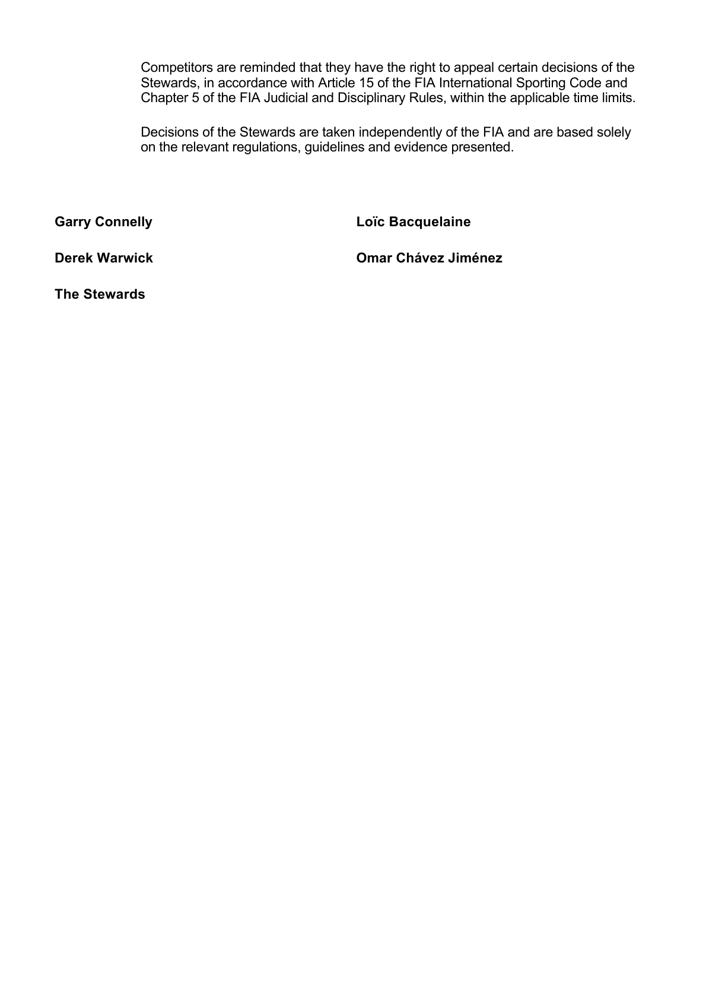 |
| Doc 68 | Carlos Sainz #55 Atlassian Williams F1 Team | Reconnaissance Laps | Pit lane speeding – 90.9 km/h | Fine The competitor (Atlassian Williams F1 Team) is fined €1000.View FIA decision — 1 pageOriginal FIA PDF. Retrieved 2026-11-08T21:47:01+00:00 (not the issue date). Latest screenshot refresh failed; these are the last successful images. Check the original PDF for later revisions. 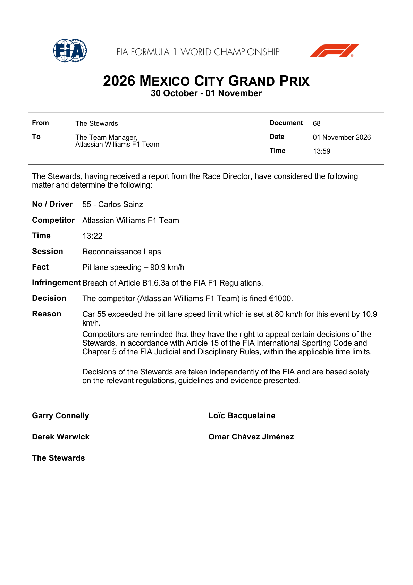 |
| Doc 69 | Charles Leclerc #16 Scuderia Ferrari HP | Race | Car 16 left the track and gained a lasting advantage | Penalty 5 second time penalty.View FIA decision — 1 pageOriginal FIA PDF. Retrieved 2026-11-08T23:39:23+00:00 (not the issue date). 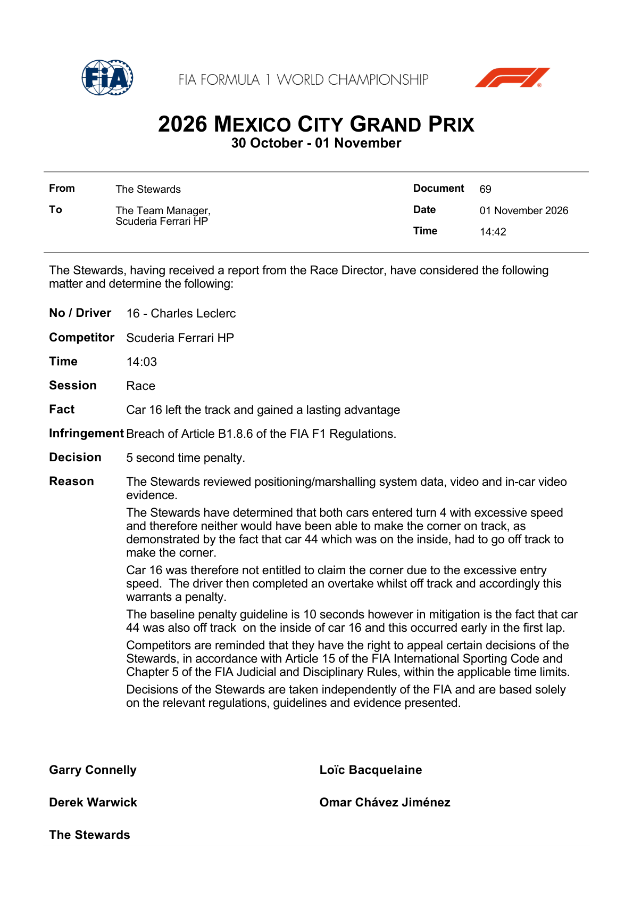 |
| Doc 70 | George Russell #63 Mercedes-AMG PETRONAS F1 Team | Race | Car 63 collided with car 6 in turn 6. | Penalty 10 second time penalty.View FIA decision — 1 pageOriginal FIA PDF. Retrieved 2026-11-08T23:39:23+00:00 (not the issue date). 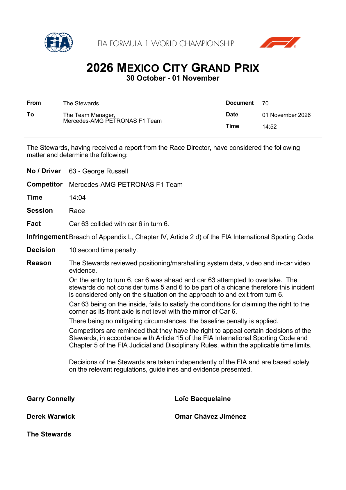 |
| Doc 71 | Sergio Perez #11 Cadillac Formula 1 Team | Race | Pit lane speeding – 80.2 km/h | Penalty 5 second time penalty.View FIA decision — 1 pageOriginal FIA PDF. Retrieved 2026-11-08T23:39:23+00:00 (not the issue date). 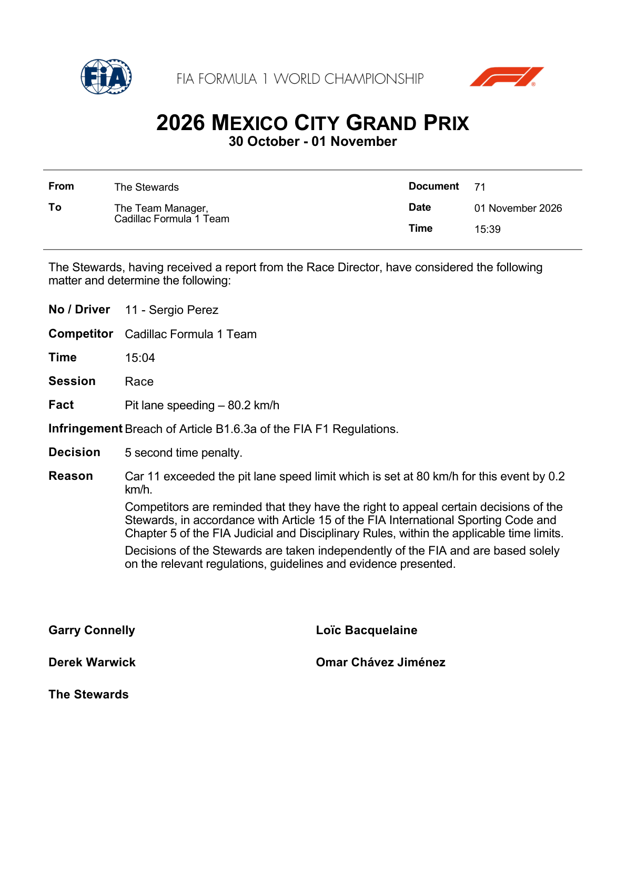 |
| Doc 74 | Nico Hulkenberg #27 Audi Revolut F1 Team | Race | Car 27 collided with Car 87 in turn 4 | Penalty 10 second time penalty.View FIA decision — 1 pageOriginal FIA PDF. Retrieved 2026-11-08T23:39:23+00:00 (not the issue date). 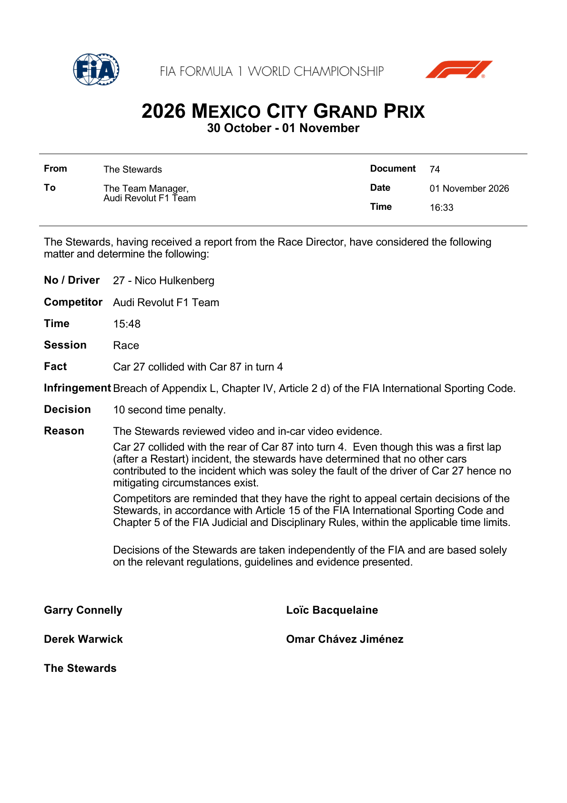 |
| Doc 76 | Pierre Gasly #10 BWT Alpine F1 Team | Race | The driver left the track at turn 1 and rejoined after turn 3, gave a position back to car | No action No further action.View FIA decision — 1 pageOriginal FIA PDF. Retrieved 2026-11-08T23:39:23+00:00 (not the issue date). 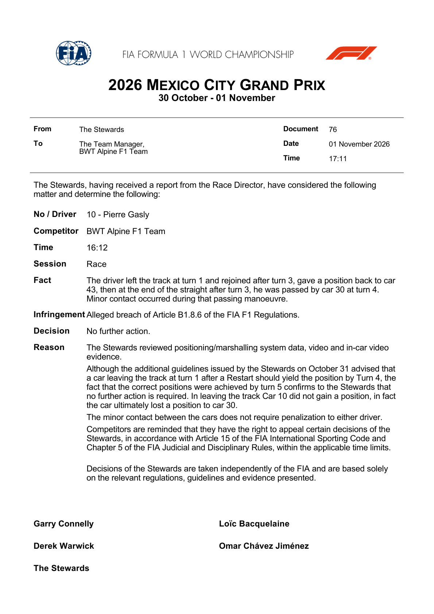 |
| Doc 79 | Oscar Piastri #81 McLaren Mastercard F1 Team | Race | Car 81 collided with Car 41 at the entry to turn 2 | Penalty 10 second time penalty imposed after the Race.View FIA decision — 2 pagesOriginal FIA PDF. Retrieved 2026-11-08T23:39:23+00:00 (not the issue date). 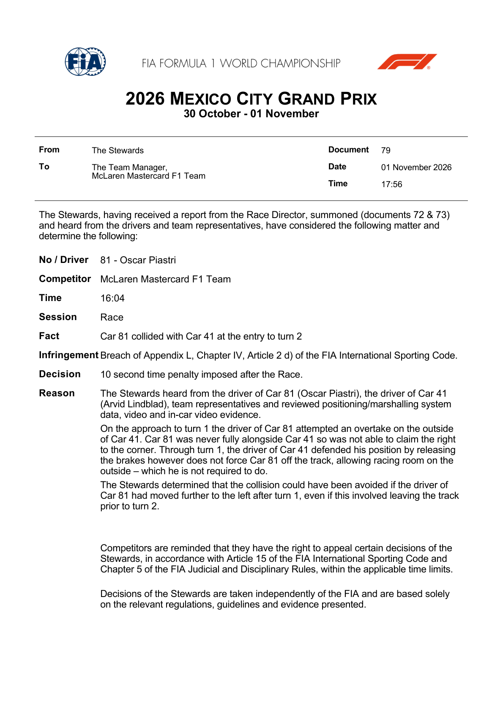 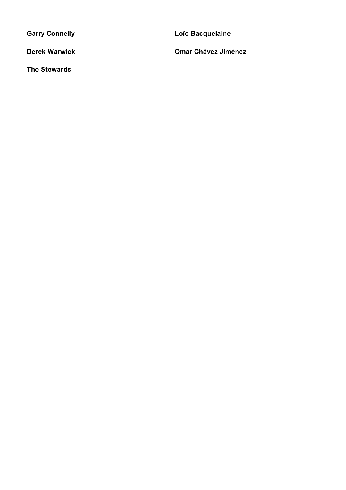 |
| Doc 80 | Oscar Piastri; Alexander Albon; Lance Stroll; Gabriel Bortoleto; Ryo Hirakawa; Pierre Gasly; Lando Norris; Nico Hulkenberg | Race | The F1 Cars below did not use the track at turns 1, 2, 11 and 12. | Note Deletion of the lap times shown in accordance with Article 12.4.1.e of the FIA InternationalView FIA decision — 2 pagesOriginal FIA PDF. Retrieved 2026-11-08T23:39:23+00:00 (not the issue date). 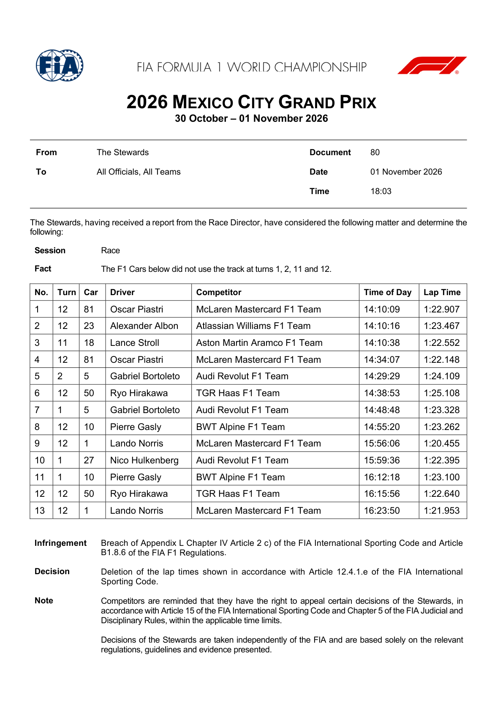 |
| Doc 83 | George Russell #63 Mercedes-AMG PETRONAS F1 Team | Race | The driver did not attend the post race media commitments. | Fine The competitor (Mercedes-AMG PETRONAS F1 Team) is fined €5,000.View FIA decision — 1 pageOriginal FIA PDF. Retrieved 2026-11-08T23:39:23+00:00 (not the issue date). 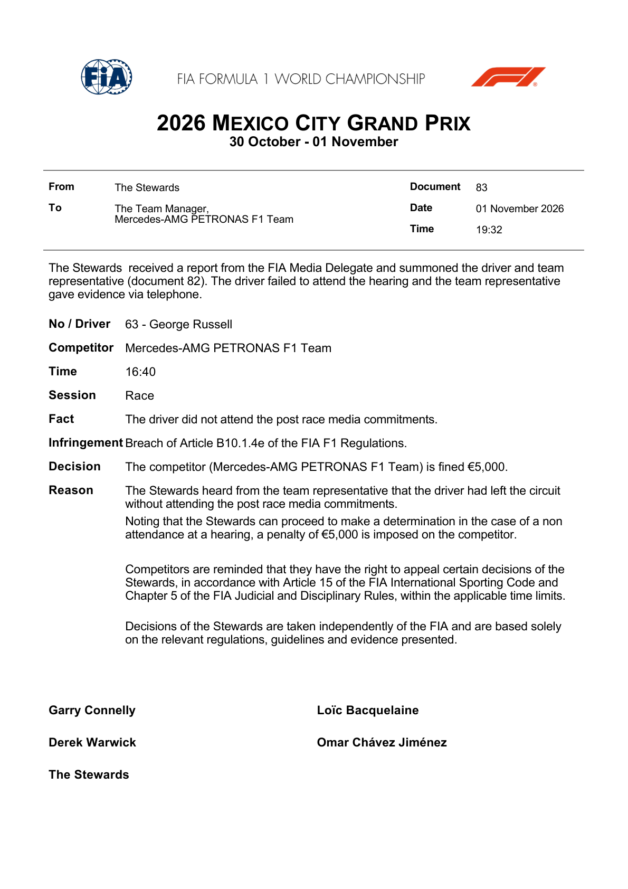 |
| Doc 84 | Pierre Gasly #10 BWT Alpine F1 Team | Race | The driver passed through a double yellow flag sector and did not make the required | Penalty Stop and go penalty imposed after the Race.View FIA decision — 1 pageOriginal FIA PDF. Retrieved 2026-11-08T23:39:23+00:00 (not the issue date). 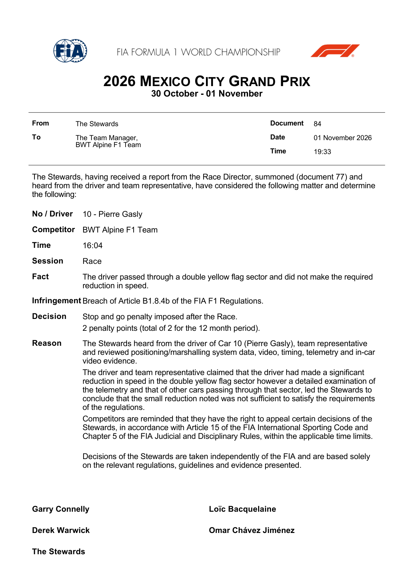 |
| Doc 85 | Franco Colapinto #43 BWT Alpine F1 Team | Race | The driver passed through a single yellow flag sector and did not make the required | Penalty 10 second time penalty imposed after the Race.View FIA decision — 2 pagesOriginal FIA PDF. Retrieved 2026-11-08T23:39:23+00:00 (not the issue date). 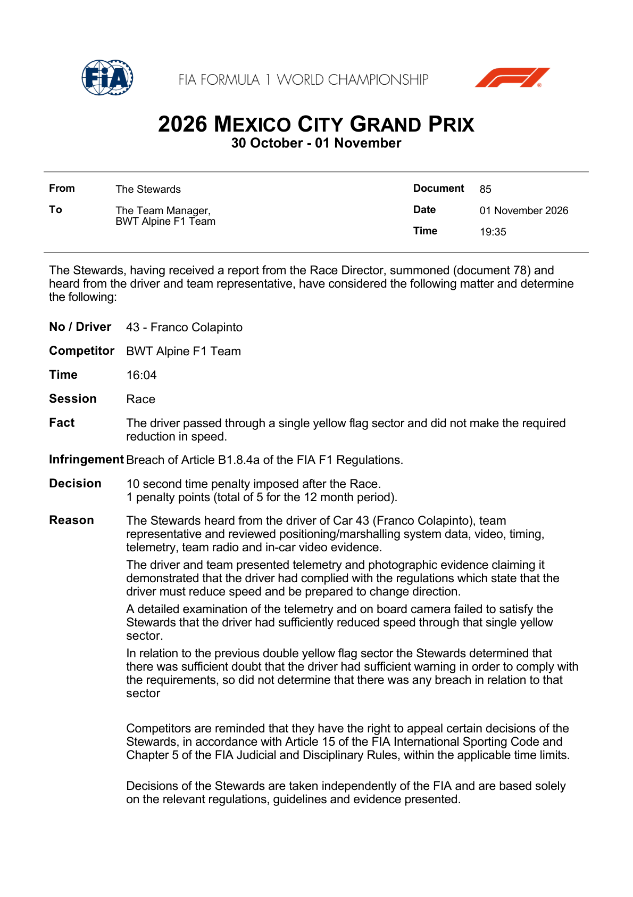 |
Source: FIA — Mexico City Grand Prix documents (stewards' decisions).
Official FIA document screenshots
Some FIA screenshots could not be refreshed. Any existing images are from successful earlier downloads; use the original PDFs to check later revisions.
Automatically rendered from the official PDFs. These figures do not update or verify the curated numeric transcriptions above. Unchanged pages already illustrated above are not repeated here.
2026_mexico_city_grand_prix_-_summons_-_car_63_-_alleged_failure_to_attend_mandatory_post-race_commitments.pdf
PDF retrieved 2026-11-08T23:39:23+00:00; this is not its issue date.
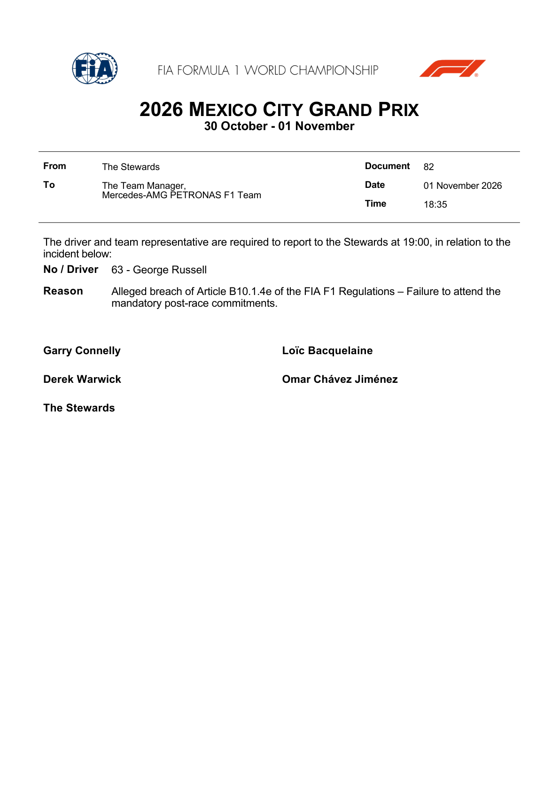
2026_mexico_city_grand_prix_-_summons_-_car_43_-_alleged_failure_to_slow_for_yellow_flags.pdf
PDF retrieved 2026-11-08T23:39:23+00:00; this is not its issue date.
2026_mexico_city_grand_prix_-_summons_-_car_10_-_alleged_failure_to_slow_for_yellow_flags.pdf
PDF retrieved 2026-11-08T23:39:23+00:00; this is not its issue date.
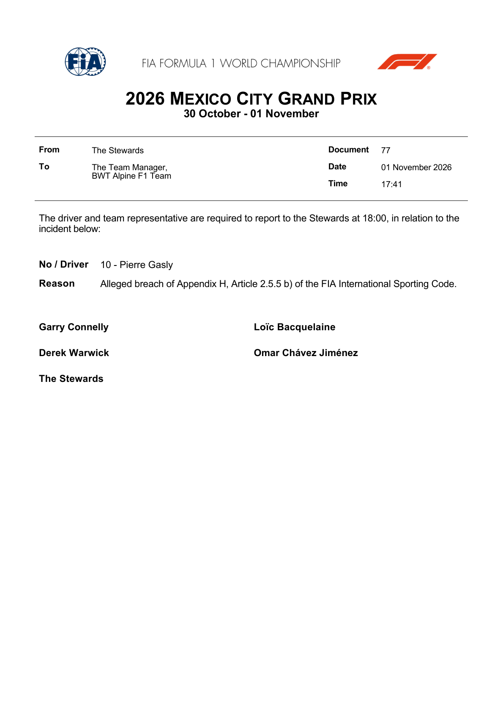
2026_mexico_city_grand_prix_-_summons_-_car_41_-_t2_incident_with_car_81.pdf
PDF retrieved 2026-11-08T23:39:23+00:00; this is not its issue date.
2026_mexico_city_grand_prix_-_summons_-_car_81_-_t2_incident_with_car_41.pdf
PDF retrieved 2026-11-08T23:39:23+00:00; this is not its issue date.
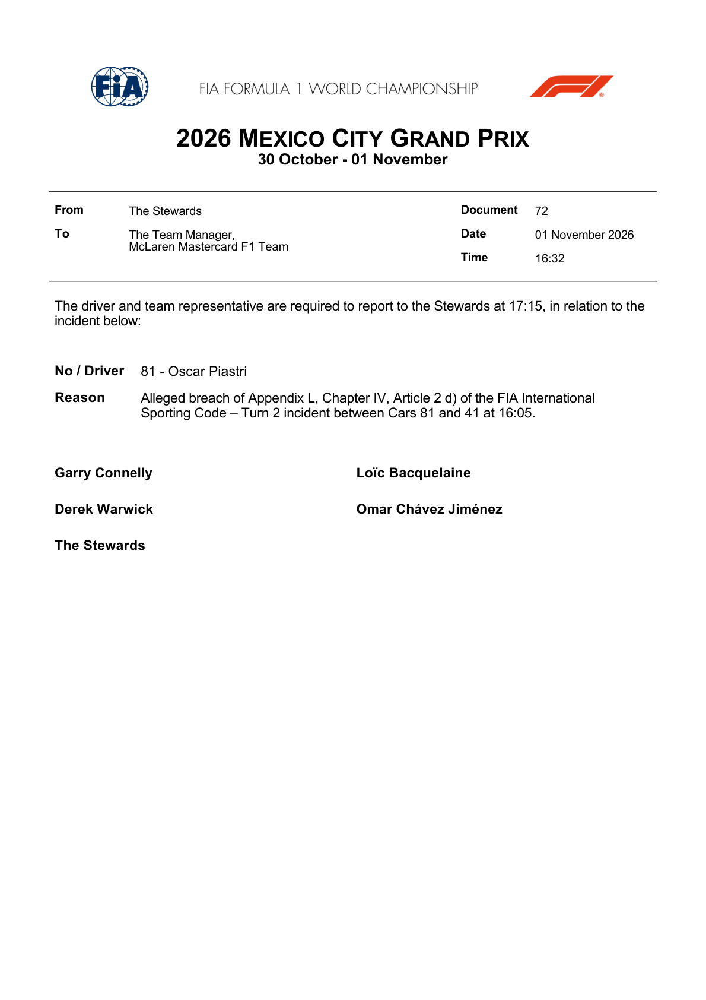
2026_mexico_city_grand_prix_-_summons_-_car_30_-_alleged_mgu-k_infringement.pdf
PDF retrieved 2026-11-08T21:05:45+00:00; this is not its issue date.
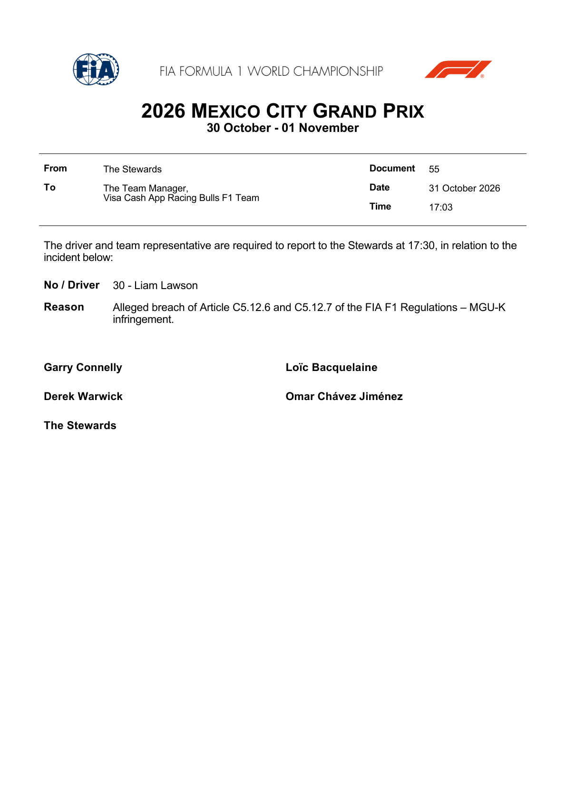
2026_mexico_city_grand_prix_-_mgu-k_infringement_car_30.pdf
PDF retrieved 2026-11-08T21:05:45+00:00; this is not its issue date.
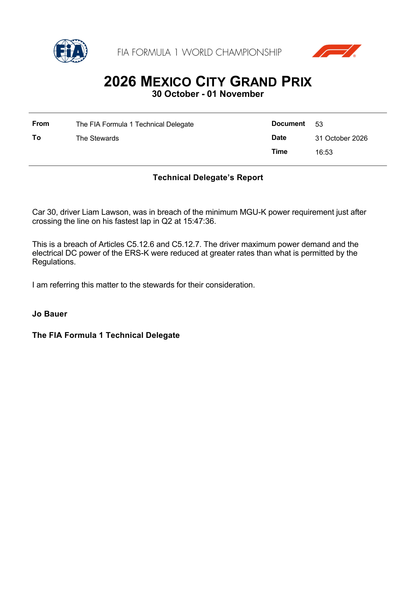
2026_mexico_city_grand_prix_-_summons_-_car_6_-_alleged_misconduct.pdf
PDF retrieved 2026-11-08T21:05:45+00:00; this is not its issue date.
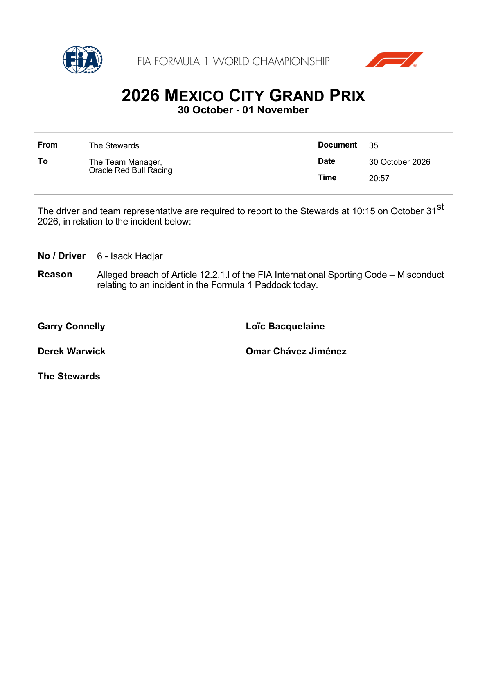
2026_mexico_city_grand_prix_-_summons_-_audi_-_car_5_covering_of_components.pdf
PDF retrieved 2026-11-08T21:05:45+00:00; this is not its issue date.
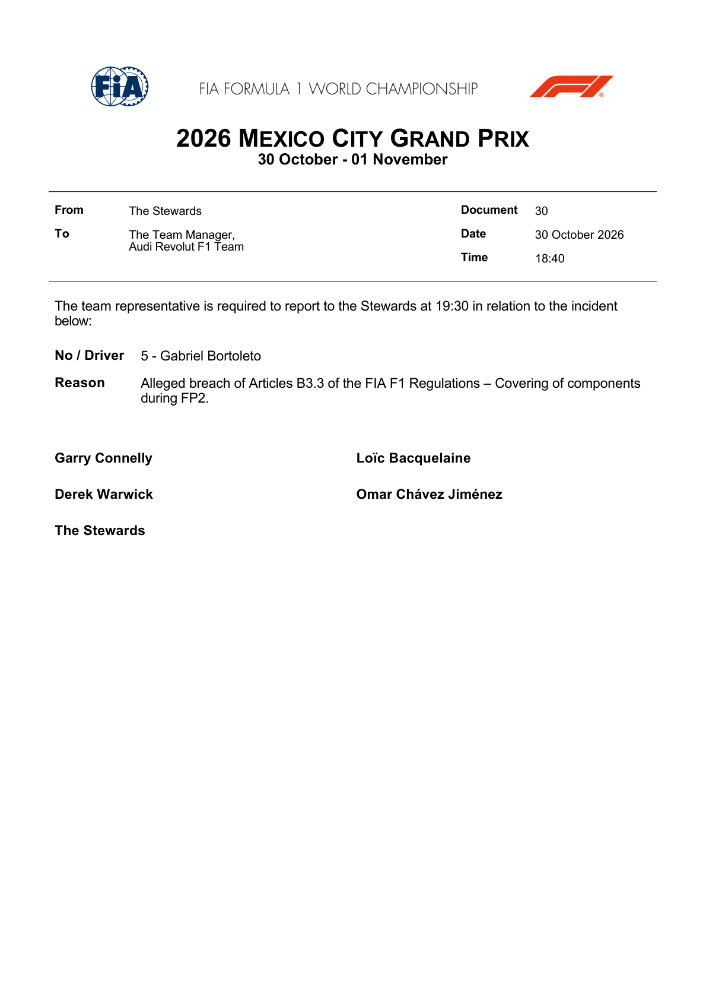
2026_mexico_city_grand_prix_-_summons_-_car_30_-_turn_14_incident_with_car_3.pdf
PDF retrieved 2026-11-08T21:05:45+00:00; this is not its issue date.
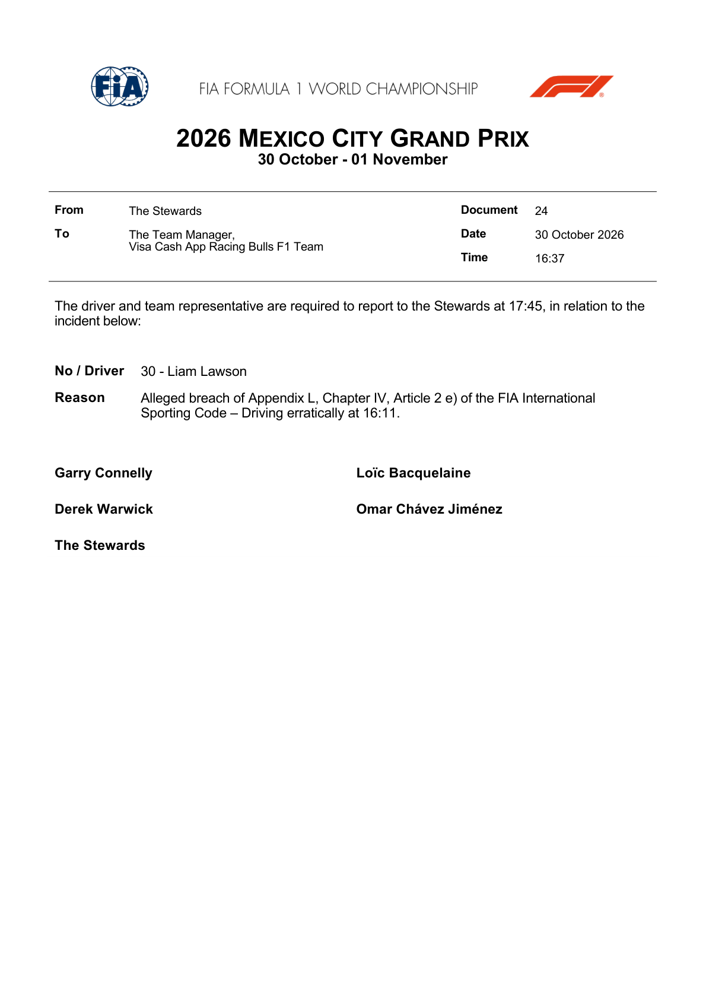
2026_mexico_city_grand_prix_-_summons_-_car_3_-_turn_14_incident_with_car_30.pdf
PDF retrieved 2026-11-08T21:05:45+00:00; this is not its issue date.
2026_mexico_city_grand_prix_-_summons_-_audi_-_alleged_release_of_car_98_in_an_unsafe_condition.pdf
PDF retrieved 2026-11-08T21:05:45+00:00; this is not its issue date.